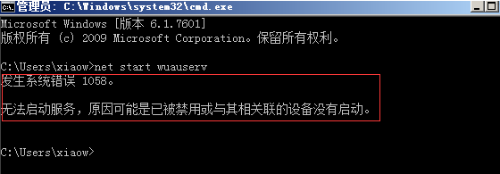

.NET安装失败的解决方案
1..NET安装错误的几种现象
1.1安装时出现灾难性故障或oxc8000247。
点开【日志文件】后，会有如下提示。
1.2安装时发生严重错误。
点开【日志文件】后，会有如下提示。
2.解决步骤
2.1给磁盘（C、E、F….）添加【UERS】组的读写权限。
注意：windowXP下默认【安装】是隐藏的，打开方法：工具 > 文件夹选项 > 查看 > 取消【使用简单文件共享】功能的勾选 > 应用 > 确认。

2.2查看windows更新服务【wuauserv】是否正常。
如服务启动时发生错误，则需要先将服务初始化。
（1）开始-运行-cmd-确定。
（2）在弹出的窗口中输入： net start wuauserv 回车。

（3）启用windows更新服务，输入：sc config wuauser start= auto 回车。

（4）启动服务，输入：net start wuauserv 回车。

2.3当【wuauserv】服务正常运行后，我们需先将该服务暂停。
（1）开始-运行-cmd-确定。
（2）在弹出的窗口输入：net stop wuauserv。
（3）打开C:\windows目录 ，找到【SoftwareDistribution】文件夹，右键【重命名】，修改为【Slod】。
（4）返回到CMD窗口，输入：net start wuauserv。
2.4修改注册表权限。
开始》运行》输入：regedit 确定，然后点开 HKEY_LOCAL_MACHINE\SOFTWARE\Microsoft\Internet Explorer\MAIN，按照下图所示操作。